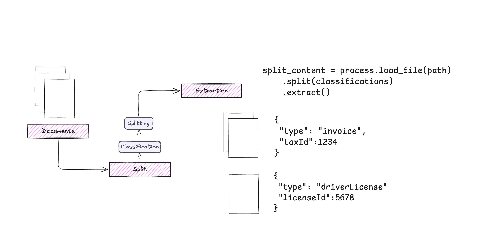

Process¶
Process is a component that orchestrates the document processing workflow, allowing you to combine multiple DocumentLoaders and Extractors for complex document processing tasks.

The workflow consists of:
This creates a pipeline that:
-
Loads the document
-
Splits it into logical sections
-
Extracts structured data from each section
Process Implementation
import asyncio
from typing import IO, Any, Dict, List, Optional, Union
from extract_thinker.image_splitter import ImageSplitter
from extract_thinker.models.classification_response import ClassificationResponse
from extract_thinker.models.classification_strategy import ClassificationStrategy
from extract_thinker.models.completion_strategy import CompletionStrategy
from extract_thinker.models.splitting_strategy import SplittingStrategy
from extract_thinker.extractor import Extractor
from extract_thinker.models.classification import Classification
from extract_thinker.document_loader.document_loader import DocumentLoader
from extract_thinker.models.classification_tree import ClassificationTree
from extract_thinker.splitter import Splitter
from extract_thinker.models.doc_groups import (
DocGroups,
)
from extract_thinker.utils import get_image_type
class Process:
def __init__(self):
# self.extractors: List[Extractor] = []
self.doc_groups: Optional[DocGroups] = None
self.split_classifications: List[Classification] = []
self.extractor_groups: List[List[Extractor]] = [] # for classication
self.document_loaders_by_file_type: Dict[str, DocumentLoader] = {}
self.document_loader: Optional[DocumentLoader] = None
self.file_path: Optional[str] = None
self.file_stream: Optional[IO] = None
self.splitter: Optional[Splitter] = None
self._content_loaded: bool = False # New internal flag
def set_document_loader_for_file_type(self, file_type: str, document_loader: DocumentLoader):
if self.document_loader is not None:
raise ValueError("Cannot set a document loader for a specific file type when a default loader is already set.")
self.document_loaders_by_file_type[file_type] = document_loader
def load_document_loader(self, document_loader: DocumentLoader):
if self.document_loaders_by_file_type:
raise ValueError("Cannot set a default document loader when specific loaders are already set.")
self.document_loader = document_loader
return self
def load_splitter(self, splitter: Splitter):
"""
Load a splitter and configure vision mode if needed.
Args:
splitter: The splitter instance to use
Returns:
self for method chaining
"""
self.splitter = splitter
# Check if the splitter is an ImageSplitter
is_vision = isinstance(splitter, ImageSplitter)
# Configure vision mode for any loaded document loaders
if self.document_loader:
self.document_loader.set_vision_mode(is_vision)
for loader in self.document_loaders_by_file_type.values():
loader.set_vision_mode(is_vision)
return self
def add_classify_extractor(self, extractor_groups: List[List[Extractor]]):
for extractors in extractor_groups:
self.extractor_groups.append(extractors)
return self
async def _classify_async(self, extractor: Extractor, file: str, classifications: List[Classification], image: bool = False):
loop = asyncio.get_event_loop()
return await loop.run_in_executor(None, extractor.classify, file, classifications, image)
def classify(self, file: str, classifications, strategy: ClassificationStrategy = ClassificationStrategy.CONSENSUS, threshold: int = 9, image: bool = False) -> Optional[Classification]:
if not isinstance(threshold, int) or threshold < 1 or threshold > 10:
raise ValueError("Threshold must be an integer between 1 and 10")
result = asyncio.run(self.classify_async(file, classifications, strategy, threshold, image))
return result
async def classify_async(
self,
file: str,
classifications: Union[List[Classification], ClassificationTree],
strategy: ClassificationStrategy = ClassificationStrategy.CONSENSUS,
threshold: int = 9,
image: str = False
) -> Optional[Classification]:
if not isinstance(threshold, int) or threshold < 1 or threshold > 10:
raise ValueError("Threshold must be an integer between 1 and 10")
if isinstance(classifications, ClassificationTree):
return await self._classify_tree_async(file, classifications, threshold, image)
# Try each layer of extractors until we get a valid result
for extractor_group in self.extractor_groups:
group_classifications = await asyncio.gather(*(
self._classify_async(extractor, file, classifications, image)
for extractor in extractor_group
))
try:
# Attempt to get result based on strategy
if strategy == ClassificationStrategy.CONSENSUS:
if len(set(c.name for c in group_classifications)) == 1:
return group_classifications[0]
elif strategy == ClassificationStrategy.HIGHER_ORDER:
return max(group_classifications, key=lambda c: c.confidence)
elif strategy == ClassificationStrategy.CONSENSUS_WITH_THRESHOLD:
if len(set(c.name for c in group_classifications)) == 1:
if all(c.confidence >= threshold for c in group_classifications):
return group_classifications[0]
# If we get here, current layer didn't meet criteria - continue to next layer
continue
except Exception as e:
# If there's an error processing this layer, try the next one
print(f"Layer failed with error: {str(e)}")
continue
# If we've tried all layers and none worked
raise ValueError("No consensus could be reached on the classification of the document across any layer. Please try again with a different strategy or threshold.")
async def _classify_tree_async(
self,
file: str,
classification_tree: ClassificationTree,
threshold: float,
image: bool
) -> Optional[ClassificationResponse]:
if not isinstance(threshold, (int, float)) or threshold < 1 or threshold > 10:
raise ValueError("Threshold must be a number between 1 and 10")
"""
Perform classification in a hierarchical, level-by-level approach.
"""
best_classification = None
current_nodes = classification_tree.nodes
while current_nodes:
# Get the list of classifications at the current level
classifications = [node.classification for node in current_nodes]
# Classify among the current level's classifications
classification_response = await self._classify_async(
extractor=self.extractor_groups[0][0],
file=file,
classifications=classifications,
image=image
)
# Handle cases where classification fails at this level
if classification_response is None:
raise ValueError(
"Classification failed at the current level. Could not determine a match."
)
if classification_response.confidence < threshold:
raise ValueError(
f"Classification confidence {classification_response.confidence} "
f"for '{classification_response.name}' is below the threshold of {threshold}."
)
best_classification = classification_response
# Use UUID for robust matching instead of name
matching_node = next(
(
node for node in current_nodes
if node.classification.uuid == best_classification.classification.uuid
),
None
)
if matching_node is None:
raise ValueError(
f"No matching node found for classification '{classification_response.name}'."
)
if matching_node.children:
current_nodes = matching_node.children
else:
break
return best_classification if best_classification else None
async def classify_extractor(self, session, extractor, file):
return await session.run(extractor.classify, file)
# check if there is only the default one, if not, get from the file type. if none is present, raise an error
def get_document_loader(self, file):
if self.document_loader is not None:
return self.document_loader
filetype = get_image_type(file)
return self.document_loaders_by_file_type.get(filetype, None)
def load_file(self, file):
self.file_path = file
return self
def split(self, classifications: List[Classification], strategy: SplittingStrategy = SplittingStrategy.EAGER):
"""Split the document into groups based on classifications."""
if self.splitter is None:
raise ValueError("No splitter loaded. Please load a splitter using load_splitter() before splitting.")
self.split_classifications = classifications
document_loader = self.get_document_loader(self.file_path)
if document_loader is None:
raise ValueError("No suitable document loader found for file type")
# Load content using the new unified load() method
if self.file_path:
pages = document_loader.load(self.file_path)
elif self.file_stream:
pages = document_loader.load(self.file_stream)
else:
raise ValueError("No file or stream available")
if len(pages) < 2:
raise ValueError("Document must have at least 2 pages")
# Process based on strategy
if strategy == SplittingStrategy.EAGER:
eager_group = self.splitter.split_eager_doc_group(pages, classifications)
self.doc_groups = eager_group
else: # LAZY strategy
if document_loader.can_handle_paginate(self.file_path):
processed_groups = self.splitter.split_lazy_doc_group(pages, classifications)
self.doc_groups = processed_groups.doc_groups
else:
raise ValueError("Document Type does not support lazy splitting. for now only pdf is supported")
return self
def extract(self,
vision: bool = False,
completion_strategy: Optional[CompletionStrategy] = CompletionStrategy.FORBIDDEN) -> List[Any]:
"""Extract information from the document groups."""
if self.doc_groups is None:
raise ValueError("Document groups have not been initialized")
async def _extract(doc_group):
# Find matching classification and extractor
classificationStr = doc_group.classification
extractor: Optional[Extractor] = None
contract = None
for classification in self.split_classifications:
if classification.name == classificationStr:
extractor = classification.extractor
# If an extraction_contract is provided, use it; otherwise, use the default contract
contract = classification.extraction_contract or classification.contract
break
if extractor is None:
raise ValueError("Extractor not found for classification")
# Get document loader
document_loader = self.get_document_loader(self.file_path)
if document_loader is None:
raise ValueError("No suitable document loader found for file type")
# Load content using the new unified load() method
if self.file_path:
pages = document_loader.load(self.file_path)
elif self.file_stream:
pages = document_loader.load(self.file_stream)
else:
raise ValueError("No file or stream available")
# Get pages for this group
group_pages = [pages[i - 1] for i in doc_group.pages]
# Set flag to skip loading since content is already processed
extractor.set_skip_loading(True)
try:
result = await extractor.extract_async(
source=group_pages,
response_model=contract,
vision=vision,
content=None,
completion_strategy=completion_strategy
)
finally:
# Reset flag after extraction
extractor.set_skip_loading(False)
return result
async def process_doc_groups(groups: List[Any]) -> List[Any]:
tasks = [_extract(group) for group in groups]
try:
processedGroups = await asyncio.gather(*tasks)
return processedGroups
except Exception as e:
print(f"An error occurred: {e}")
raise
loop = asyncio.get_event_loop()
processedGroups = loop.run_until_complete(
process_doc_groups(self.doc_groups)
)
return processedGroups
Using Multiple DocumentLoaders¶
You can configure different DocumentLoaders for specific file types:
from extract_thinker import Process
from extract_thinker.document_loader import (
DocumentLoaderTesseract,
DocumentLoaderPyPdf,
DocumentLoaderAzureForm
)
process = Process()
# Set loaders for specific file types
process.set_document_loader_for_file_type(
"pdf", DocumentLoaderPyPdf()
)
process.set_document_loader_for_file_type(
"png", DocumentLoaderTesseract(tesseract_path)
)
# Or set a default loader
process.load_document_loader(
DocumentLoaderAzureForm(subscription_key, endpoint)
)
Using Multiple Extractors¶
You can use multiple extractors for different document types or processing stages:
from extract_thinker import Extractor, Classification
# Initialize extractors with different models
gpt4_extractor = Extractor(document_loader)
gpt4_extractor.load_llm("gpt-4o")
claude_extractor = Extractor(document_loader)
claude_extractor.load_llm("claude-3-haiku-20240307")
# Create classifications with specific extractors
classifications = [
Classification(
name="Invoice",
description="This is an invoice",
contract=InvoiceContract,
extractor=gpt4_extractor
),
Classification(
name="License",
description="This is a license",
contract=LicenseContract,
extractor=claude_extractor
)
]
# Process will use the appropriate extractor for each document type
result = process.load_file("document.pdf")\
.split(classifications)\
.extract()